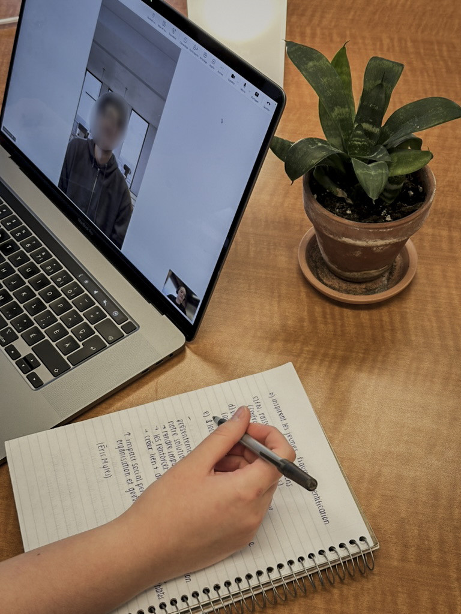
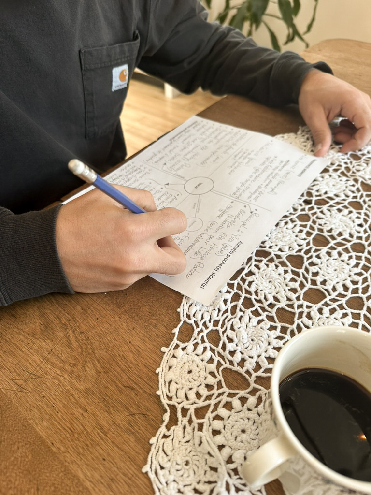
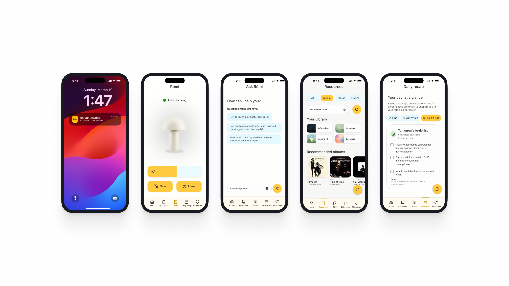
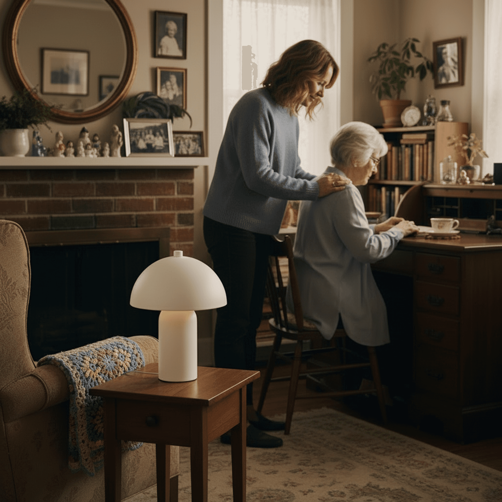

Rémi
Supporter les proches aidants
Mise en contexte
Ce projet s'inscrit dans l'objectif de développement durable « Bonne santé et bien-être » de l'ONU, en s'intéressant plus précisément à la maladie d'Alzheimer et à ceux qui vivent dans son ombre : les proches aidants.
Au Québec, en 2025, 110 000 personnes soutiennent un proche atteint d'un trouble cognitif, pour une moyenne de 26 heures par semaine, souvent au détriment de leur propre bien-être. D'ici 2050, ces troubles devraient augmenter de 140 % (Société Alzheimer, s.d.).
Objectif
Face à cette réalité, ce projet vise à concevoir un produit centré sur le bien-être des proches aidants : un outil qui soutient leur qualité de vie, allège leur charge quotidienne et facilite la conciliation entre leur rôle d'aidant et leur vie personnelle.
Méthode de recherche
Observation participante
Réalisée à trois reprises afin de mieux comprendre les perceptions, les émotions et les comportements des proches aidants face aux contraintes de la maladie.
Observation non participante
Réalisée à six reprises afin de saisir les dynamiques réelles et spontanées du rôle de proche aidant, souvent plus difficiles à verbaliser.
Entrevue
Menée de façon formelle (4) et informelle (2) afin d'obtenir des récits concrets et des problématiques vécues par les proches aidants à travers leur propre point de vue.
Questionnaire
Diffusé afin de recueillir plus d'une cinquantaine de points de vue auprès d'une variété de participants et de dégager des tendances liées aux grands sujets de recherche.
Cartographie
Réalisée à deux reprises afin de visualiser la complexité du système de soutien, de comprendre la circulation de l'information et d'identifier les surcharges et ruptures.
Journal de bord
Réalisé à deux reprises afin de documenter le quotidien pour mieux comprendre les perceptions et émotions du proche aidant, tout en limitant le temps et l'effort requis.




Constats
Le rôle de proche aidant s'installe progressivement, souvent sans anticipation de l'implication à venir.
La charge mentale liée à la planification, aux décisions et à la gestion augmente et évolue à mesure que la maladie progresse.
Avec le temps, l'énergie diminue, tout comme le soutien social et la reconnaissance.
Les sentiments de culpabilité et d'impuissance sont fréquents, notamment face à la gestion des symptômes et au manque de solutions claires.
Les échanges avec les spécialistes deviennent moins réguliers après le diagnostic, réduisant le suivi et l'accompagnement.
Les conseils disponibles sont souvent trop généraux et peu adaptés, ce qui limite la personnalisation selon la situation de chaque proche aidant.
Opportunité de design
Ces constats nous ont amenés à formuler l'opportunité suivante : Comment pourrait-on offrir aux proches aidants un accompagnement personnalisé qui évolue avec la progression de la maladie, afin d'alléger leur charge mentale et de soutenir leur bien-être tout au long de leur parcours ?
Solution finale
Notre solution se nomme Rémi. Présent dans le logement de la personne atteinte d'Alzheimer, il écoute activement les conversations entre celle-ci et le proche aidant. Grâce à un algorithme, il génère chaque jour une rétrospective simple et claire qui résume les moments clés, identifie les enjeux rencontrés et propose des conseils adaptés à chaque situation unique, pour que le proche aidant se sente le plus outillé possible dans un rôle qui évolue sans cesse.
Rémi peut également être sollicité à un moment précis de la journée, que ce soit pour répondre à une question importante ou pour accompagner un moment difficile. Il est entièrement contrôlé par le proche aidant, qui choisit quand l'activer selon son confort, grâce à des contrôles complets sur la lampe et dans l'application.

